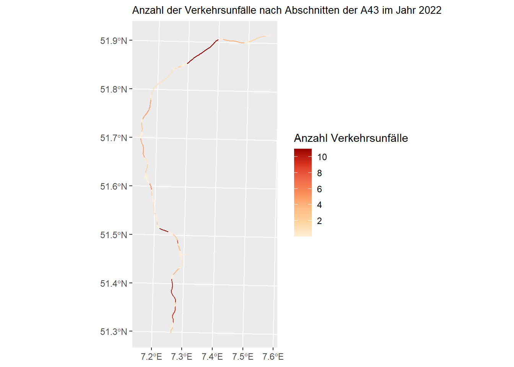
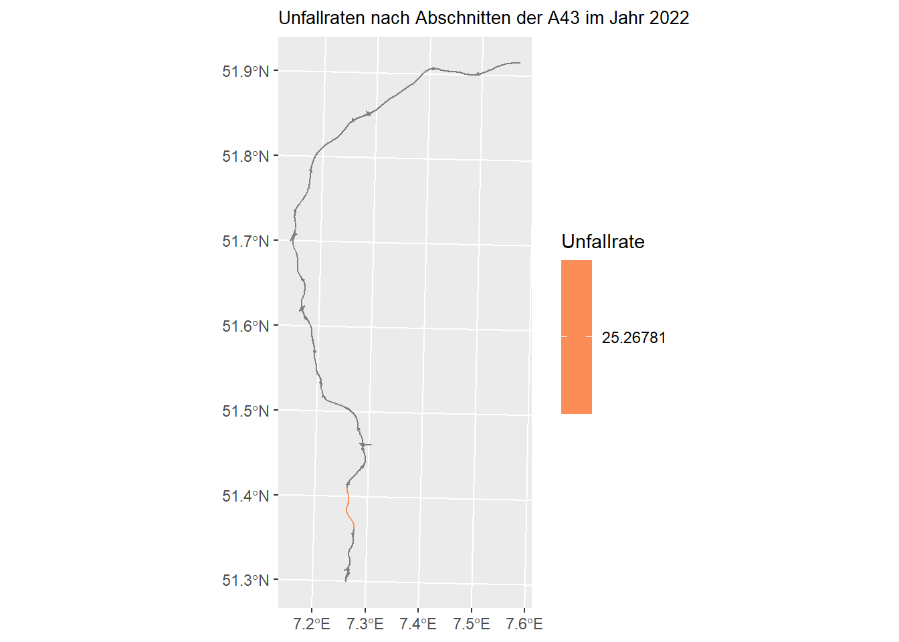

unfall_csv = read_csv2("data/Unfallorte2022_LinRef.csv")
unfaelle <- st_as_sf(unfall_csv, coords = c("LINREFX", "LINREFY"),
crs = 25832)3 Ausführliche Erläuterungen zur Musterlösung
Daten der Bundesinformationssystem Straße (BISStra) für Straßennetz: https://www.bast.de/DE/Verkehrstechnik/Fachthemen/v2-bisstra.html
Daten für Unfälle vom Unfallatlas: https://unfallatlas.statistikportal.de/
3.1 Unfalldichte
3.1.1 A43
Daten einlesen:
strecke <- read_sf("data/geo/BFStr_Netz_SK.geojson")
a43 <- strecke |>
filter(Str_Kennung == "A43" & Sk_Achse == "Hauptachse") |>
mutate(rownumber = row_number())Unfälle filtern:
unfaelle_43 = unfaelle %>%
# find out which autobahn is closest by
mutate(nearest_autobahn_id = st_nearest_feature(st_zm(.), a43)) %>%
# calculate distance to closest autobahn
mutate(nearest_autobahn_distance = st_distance(st_zm(.), a43[nearest_autobahn_id, ], by_element = TRUE))Alles nicht in der Nähe von BAB raus:
unfaelle_autobahn = unfaelle_43 |>
filter(as.double(nearest_autobahn_distance) <= 15) |>
st_zm()Unfälle zählen:
autobahnen_accident_count = unfaelle_autobahn %>%
as_tibble() %>%
select(-geometry) %>%
count(nearest_autobahn_id, UKATEGORIE) %>%
spread(UKATEGORIE, n) %>%
rename(Anzahl_UK2 = `2`, Anzahl_UK3 = `3`) %>%
replace(is.na(.), 0) %>%
mutate(Anzahl_U_G = Anzahl_UK2 + Anzahl_UK3)
# Hier gehören eigentlich noch Unfaelle nach Kategorie 1 reinVerbinden mit Daten der A43:
a43 = a43 |>
left_join(autobahnen_accident_count, by = c("rownumber" = "nearest_autobahn_id"))Plotten:
ggplot () +
geom_sf(data = a43, size = 2, mapping = aes(color = Anzahl_U_G)) +
scale_color_distiller(palette = 8 , direction = 1, breaks = seq(2,14,2)) +
labs(title = "Anzahl der Verkehrsunfälle nach Abschnitten der A43 im Jahr 2022",
color = "Anzahl Verkehrsunfälle") +
theme(plot.title = element_text(size=10))
3.1.2 Gesamtdeutschland
strecke_de <- strecke |>
filter(Str_Klasse_kurz == "A" & Sk_Achse == "Hauptachse") |>
mutate(rownumber = row_number())Unfälle filtern:
unfaelle_de = unfaelle %>%
# find out which autobahn is closest by
mutate(nearest_autobahn_id = st_nearest_feature(st_zm(.), strecke_de)) %>%
# calculate distance to closest autobahn
mutate(nearest_autobahn_distance = st_distance(st_zm(.), strecke_de[nearest_autobahn_id, ], by_element = TRUE))Alles nicht in der Nähe von BAB raus:
unfaelle_de_autobahn = unfaelle_de |>
filter(as.double(nearest_autobahn_distance) <= 15) |>
st_zm()Unfälle zählen:
de_unfall_anzahl = unfaelle_de_autobahn %>%
as_tibble() %>%
select(-geometry) %>%
count(nearest_autobahn_id, UKATEGORIE) %>%
spread(UKATEGORIE, n) %>%
rename(Anzahl_UK1 = `1`,Anzahl_UK2 = `2`, Anzahl_UK3 = `3`) %>%
replace(is.na(.), 0) %>%
mutate(Anzahl_U_G = Anzahl_UK1 + Anzahl_UK2 + Anzahl_UK3)Verbinden mit Daten:
strecke_de = strecke_de |>
left_join(de_unfall_anzahl, by = c("rownumber" = "nearest_autobahn_id"))
strecke_de = strecke_de |>
mutate(UD = (Anzahl_U_G)/(Sk_Laenge_km))Plotten:
d_de <- gisco_get_nuts(country = "Germany", nuts_level = 0, resolution = 03)ggplot () +
geom_sf(data = d_de, fill = NA, size = 0.5) +
geom_sf(data = strecke_de, size = 2, mapping = aes(color = Anzahl_U_G)) +
scale_color_distiller(palette = 8 , direction = 1) +
labs(title = "Anzahl der Verkehrsunfälle nach Abschnitten der BAB im Jahr 2022",
color = "Anzahl Verkehrsunfälle") +
theme(plot.title = element_text(size=10))
3.2 Unfallrate:
Zählstelle als sf
d_Jawe <- read_csv2("data/zs/Jawe2022.csv", locale = locale(encoding = 'iso-8859-1'))Überprüfen wieviele Zählstellen Daten haben:
d_Jawe_BAB <- d_Jawe |>
filter(Str_Kl == "A")
Anzahl_BAB_ZST = nrow(d_Jawe_BAB)d_Jawe_BAB_NA <- d_Jawe_BAB |>
drop_na(DTV_Kfz_MobisSo_Q)
Anzahl_BAB_ZST_Daten = nrow(d_Jawe_BAB_NA)Wir haben also Anzahl_BAB_ZST = 1228 Zählstellen auf Autobahnen und davon besitzen Anzahl_BAB_ZST_Daten = 868 Daten im Jahr 2022.
Koordinaten der Zählstelle als simple feature anlegen, da nur so weitere sf-Funktionen verwendet werden können.
d_Jawe_sf = st_as_sf(d_Jawe, coords = c("Koor_UTM32_E", "Koor_UTM32_N"), crs = 25832)Exemplarisch nur Werte der A43, die auch vorhanden sind. Blöderweise nur noch 1 Wert über.
d_Jawe_sf <- d_Jawe_sf |>
filter(Str_Kl == "A" & Str_Nr == "43") |>
drop_na(DTV_Kfz_MobisSo_Q)d_Jawe_sf = d_Jawe_sf %>%
# find out which autobahn is closest by
mutate(nearest_autobahn_id = st_nearest_feature(st_zm(.), a43))%>%
# calculate distance to closest autobahn
mutate(nearest_autobahn_distance = st_distance(st_zm(.), a43[nearest_autobahn_id, ], by_element = TRUE))d_Jawe_sf2 = d_Jawe_sf |>
as_tibble() |>
select(DZ_Nr, nearest_autobahn_id, DTV_Kfz_MobisSo_Q, !geometry)TO-DO:Unfallrate-Formel richtig machen
a43_2 = a43 |>
left_join(d_Jawe_sf2, by = c("rownumber" = "nearest_autobahn_id")) |>
mutate(UR = (10^6*Anzahl_U_G)/ (DTV_Kfz_MobisSo_Q * Sk_Laenge_km), UD = (Anzahl_U_G)/(Sk_Laenge_km))ggplot () +
geom_sf(data = a43_2, size = 2, mapping = aes(color = UR)) +
scale_color_distiller(palette = 8 , direction = 1) +
labs(title = "Unfallraten nach Abschnitten der A43 im Jahr 2022",
color = "Unfallrate") +
theme(plot.title = element_text(size=10))